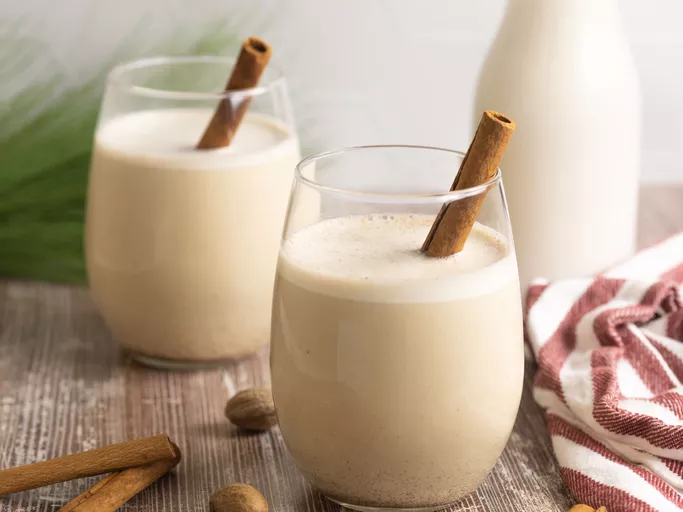

Coquito

Ingredients
- 1 (12oz) can evaporated milk
- 2 large egg yolks beaten
- 1 (14oz) can cream of coconut
- 1 (14oz) can sweetened condensed milk
- 1/2 cup white rum
- 1/2 cup water
- 1 tsp vanilla extract
- 1/2 tsp ground cinnamon
- 1/4 tsp ground cloves
Directions
- Gather all ingredients
- Combine evaporated milk and egg yolks in the top of a double boiler over simmering water. Cook over the simmering water, stirring constantly, until mixture is thick enough to coat the back of a spoon, and reaches a temperature of 160 degrees F (71 degrees C).
- Transfer mixture to a blender. Add cream of coconut, sweetened condensed milk, rum, water, vanilla, cinnamon, and cloves; blend until combined, about 30 seconds.
- Pour into sterilized glass bottles and store in the refrigerator; serve cold or over ice, if desired.